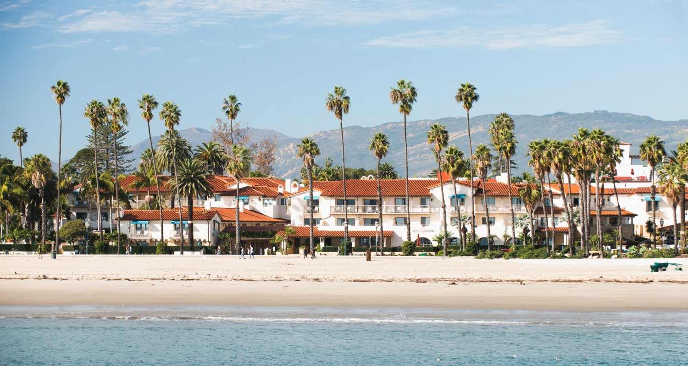

Visit Santa Barbara!
"Nestled between the Pacific Ocean and the Santa Ynez mountains and only a day trip from Los Angeles, its natural beauty and historic architecture have been protected for nearly two centuries. With its year-round Mediterranean climate, this central California coastal port is a relaxing rendezvous." - Downtown Organization of Santa Barbara, Inc
Click on the dolphin to read about local attractions and events:

image credit
Santa Barbara is a town with a lot to offer, like its beautiful beaches, mountains, and architecture. There are many things to do, including live music, shopping, and much more!
Places to see and things to do in Santa Barbara
- State Street: State Street is Santa Barbara's main destination for shopping and more. There are many local boutiques and restaurants, and it is easy to walk along the street all the way down to the beach.
- The Santa Barbara Bowl: The Santa Barbara Bowl is a live music venue with seating for over 4,500 people. You can find upcoming shows and buy tickets on their website.
- Santa Barbara International Film Festival: SBIFF is an annual festival in late January/early February. Actors and filmmakers give interviews, awards are given out, and many films are shown at Santa Barbara's Riviera Theatre.